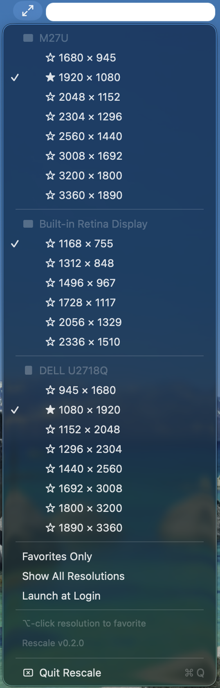

The missing menu for display scaling.
xattr -cr /Applications/Rescale.app
Step 2 removes the macOS quarantine flag on unsigned apps. Only needed once per download.
Updating? Replace the old Rescale.app in Applications with the new one and re-run the xattr command.

Change display scaling in two clicks instead of digging through System Settings.
See every connected monitor in one menu, with orientation icons for landscape and portrait.
Option-click to star the resolutions you use most. Toggle "Favorites Only" to cut the clutter.
Menu bar agent with no Dock icon, no windows, no bloat. Just the scaling options you need.